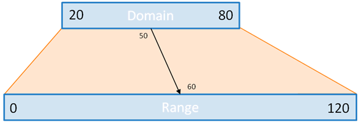

Objectives For Lesson 16.2
- More D3!
Why We Learn?
We're going more in-depth with D3 because D3 is really powerful in manipulating data in the browser.
01-Par_Review_D3
Work in pairs and answer the questions given in questions.js.
D3 Review
The activity gave you the following code.
/* 4. Imagine three <li> elements already exist on the page. Create code to update the text of those elements while also adding three new elements to match the array below. */
var arr = [1, 1, 2, 3, 5, 8];
var ul = d3.select("ul#test-01");
// YOUR CODE HERE //
var selection = ul.selectAll("li")
.data(arr);
selection.enter()
.append("li")
.merge(selection)
.text(function(d) {
return d;
});
/* Bonus - Refactor your solution to number 4 above using the ES6 syntax for arrow functions. Then, modify the code to set the text of each
element to "<index in the array>: <item from the array>" */
var selection = ul.selectAll("li") // creates virtual selection
.data(arr); // binds data
selection.enter()
.append("li") // appends li element for each item in array (since there are currently none)
.merge(selection)
.text((d, i) => `${i}: ${d}`);
- Dimitri
- Dimitri
- Dimitri
02-Ins_Loading_Data
We are given this code, and in my server, there is an "hours-of-tv-watched.csv".
d3.csv("assets/hours-of-tv-watched.csv", function(error, tvData) {
if (error) return console.warn(error);
console.log(tvData);
// log a list of names
var names = tvData.map(data => data.name);
console.log("names", names);
// Cast each hours value in tvData as a number using the unary + operator
tvData.forEach(function(data) {
data.hours = +data.hours;
console.log("Name:", data.name);
console.log("Hours:", data.hours);
});
});
If you run the following code in your activity from your local computer, there is an error. (For your reference: https://stackoverflow.com/questions/20041656/xmlhttprequest-cannot-load-file-cross-origin-requests-are-only-supported-for-ht
This is often found when you use Javascript to request for data. Javascript only allows data to be requested from the same domain URL, because it is too powerful and it can hack into computers. So modern browsers made sure to block and protect your computer.
So how do you get the example to work?
Run a mini-server from Terminal by typing: python -m http.server.
Of course, make sure you're in your correct environment first. This is part of your homework.
Without Flask, your python command can create a local server on your computer. The default address is: localhost:8000
Notice that the above code has an + unary operator at the assignment of the data.hours. This is a common practice to ensure numeric data is parsed correctly, i.e. parseInt(). For more reference: https://scotch.io/tutorials/javascript-unary-operators-simple-and-useful
03-Par_BarChart_From_CSV
Create a bar chart to reflect the CSV data. It's a reference from your previous lesson in 16.1, so go through it as your reference. You're already given some starter code.
04-Evr_Scales
D3 has certain math functions for you, and it helps you just like how pandas does.
Max, Min, Extent
// Part 1: Max, Min, Extent
var dataArr = [10, 20, 2000];
console.log("min value ", d3.min(dataArr));
console.log("max value ", d3.max(dataArr));
console.log("min and max values ", d3.extent(dataArr));
Extend is basically the domain in an array.
scaleLinear
We scale the pixels because charts are defined by pixels. Single-digit pixels are simply too small to visualize.
- Domain: Bounds of the data
- Range: Bounds of the chart
Imagine you have test scores with possible scores from 0 to 100, and you want to graph them in an SVG that is 1000 pixels high.
var testScores = [50, 90, 95, 75, 85];
You can hard-code it and do the domain and range:
var yScale = d3.scaleLinear()
.domain([0, 100])
.range([0, 1000]);
console.log(`50 returns ${yScale(50)}`);
console.log(`75 returns ${yScale(75)}`);
console.log(`100 returns ${yScale(100)}`);
Or you can use what you've just learned and do max and min.
var svgHeight = 1000;
var yScale = d3.scaleLinear()
.domain([0, d3.max(testScores)])
.range([0, svgHeight]);
console.log(`50 returns ${yScale(50)}`);
console.log(`75 returns ${yScale(75)}`);
console.log(`95 returns ${yScale(95)}`);
You can use extend too:
var svgHeight = 1000;
var yScale = d3.scaleLinear()
.domain(d3.extent(testScores))
.range([0, svgHeight]);
console.log(`50 returns ${yScale(50)}`);
console.log(`75 returns ${yScale(75)}`);
console.log(`95 returns ${yScale(95)}`);
Notice that the first element returns zero. Why?
scaleBand
Imagine you want to visualize student grade information on a bar chart.
svgHeight = 600;
var svgWidth = 1000;
testScores = [90, 85, 75, 90];
var students = ["Han", "Sarah", "Matt", "Ruchi"];
var xScale = d3.scaleBand() // scaleBand helps to plot the spacing between each bars.
.domain(students)
.range([0, svgWidth]);
console.log(`Han's x-coordinate: ${xScale("Han")}`);
console.log(`Sarah's x-coordinate: ${xScale(students[1])}`);
console.log(`Matt's x-coordinate: ${xScale("Matt")}`);
console.log(`Ruchi's x-coordinate: ${xScale(students[3])}`);
console.log(`Each band is ${xScale.bandwidth()} pixels wide.`);
// The y values are scaled separately.
var yScale = d3.scaleLinear()
.domain([0, 100])
.range([0, svgHeight]);
console.log(`The height of Han's bar: ${yScale(testScores[0])}`);
More resources for D3 scales:
05-Ins_Intro_To_Axes
Some explanations before we begin:
- svgHeight: How much height to render
- svgWidth: How much width to render
- margin: Spacing between elements
- chartHeight: The actual chart height within the SVG container.
- chartWidth: The actual chart width within the SVG container.
- g: Container used to group other SVG elements, so that ransformations can be done to all child elements within.
Prepare the data and the SVG container:
Always prepare the data, and the SVG container itself first:
// data
var dataArray = [1, 2, 3];
var dataCategories = ["one", "two", "three"];
/* Preparing The Container */
// svg container
var svgHeight = 400;
var svgWidth = 1000;
// margins
var margin = {
top: 50,
right: 50,
bottom: 50,
left: 50
};
// chart area minus margins
var chartHeight = svgHeight - margin.top - margin.bottom; // this is enforcing by hand
var chartWidth = svgWidth - margin.left - margin.right;
// create svg container
var svg = d3.select("#svg-area-05").append("svg")
.attr("height", svgHeight)
.attr("width", svgWidth);
// shift everything over by the margins
var chartGroup = svg.append("g")
.attr("transform", `translate(${margin.left}, ${margin.top})`);
/* Preparing The Container End */
Scale your graph into proportions
You've learned how to scale it earlier.
/* Scaling The Graph Into Proportions */
// scale y to chart height
var yScale = d3.scaleLinear()
.domain([0, d3.max(dataArray)])
.range([chartHeight, 0]);
// scale x to chart width
var xScale = d3.scaleBand()
.domain(dataCategories)
.range([0, chartWidth])
.padding(0.05);
/* Scaling The Graph Into Proportions End */
*New* Creating axes
Load the scales previously and form both yAxis and xAxis
// create axes
var yAxis = d3.axisLeft(yScale); // methods are native within d3
var xAxis = d3.axisBottom(xScale);
Only then can you render it into a g tag. To those who're familiar with Photoshop, usually you'll want to group graphics together and label them to reuse, correct? Same principle here.
// set x to the bottom of the chart
// You append to <g>, since you're rendering from it.
chartGroup.append("g")
.attr("transform", `translate(0, ${chartHeight})`)
.call(xAxis); // This takes the xAxis variable and loads it into <g>
// set y to the y axis
// This syntax allows us to call the axis function
// and pass in the selector without breaking the chaining
chartGroup.append("g") // You append to <g>, since you're rendering from it.
.call(yAxis); // This takes the yAxis variable and loads it into <g>
/* Note: The above code is equivalent to this:
var g = chartGroup.append("g");
yAxis(g);
*/
The g tag groups the variables of the axis together, and renders them. Because the xAxis is going to be on the bottom, you'll have to use transform and translate to place it at the bottom of the graph. Otherwise, it will render from the top.
Finally, load the data into your graph in chartGroup:
// Append Data to chartGroup
chartGroup.selectAll(".bar")
.data(dataArray)
.enter()
.append("rect")
.classed("bar", true)
.attr("x", (d, i) => xScale(dataCategories[i]))
.attr("y", d => yScale(d))
.attr("width", xScale.bandwidth())
.attr("height", d => chartHeight - yScale(d));
So the steps are:
- Prepare the container
- Scale the graph into proportions
- Create your axes and render them
- Load the data into your graph.
I've hidden a divider here:
Some additional references: Notes on D3 Axes - Paul Sherman
06-Stu_Complete_Bar_Chart: Your Turn
This is mostly built on the solution from activity 3. Draw a bar chart from CSV complete with axes.
Don't forget to run your server: python -m http.server
07-Ins_Line_Generators_Intro
Generating a Path with HTML
The above is generated by the following code:
<svg id="path-1" width="400" height="250">
<path d="M100,120 200,250 300,160 400,200" style="stroke:black; stroke-width:3; fill: none;"></path>
</svg>
What's happening above?
- The
pathtag is where the container for lines. dcontains the drawing commands, as though you're drawing from a pen:Mis the "move to" command and will cause a "pen" to draw at the specific coordinate.- The coordinate is represented by
x,y, i.e.200,250 Lis the "line to" command and will draw a line from the current point to the coorindates specified.- You can't see the
Lyet, but you shall see it in the next example.
Generating a Path with D3 and an Array
There is an svg#path-2 above.
// Generating a Path with D3 and an Array
var coordinates = [
[100, 120],
[200, 250],
[300, 160],
[400, 200]
];
var lineGenerator = d3.line();
console.log("Drawing commands:", lineGenerator(coordinates));
var svg = d3.select("#path-2");
svg.append("path")
.attr("fill", "none")
.attr("stroke", "blue")
.attr("stroke-width", 5)
.attr("d", lineGenerator(coordinates));
What's happening above?
d3.line()creates a function to store an array of coorindates, and create the drawing commands with thedattribute.lineGeneratorwill createM100,120L200,250L300,160L400,200as you've seen previously.
Scaling and Using Accessor Functions
There is an svg#path-3 above.
// Scaling and Using Accessor Functions
var dataArray = [
{ x: 10, y: 12 },
{ x: 20, y: 25 },
{ x: 30, y: 16 },
{ x: 40, y: 20 }
];
var xScale = d3.scaleLinear()
.domain([0, d3.max(dataArray, d => d.x)])
.range([0, 400]);
var yScale = d3.scaleLinear()
.domain([0, d3.max(dataArray, d => d.y)])
.range([0, 250]);
var lineGenerator = d3.line()
.x(d => xScale(d.x))
.y(d => yScale(d.y));
console.log("Drawing commands:", lineGenerator(dataArray));
var svg = d3.select("#path-3");
svg.append("path")
.attr("fill", "none")
.attr("stroke", "orange")
.attr("stroke-width", 5)
.attr("d", lineGenerator(dataArray));
What's happening above?
- The previous examples are using
pixelsto generate the lines, but you're not likely to be given pixels. Most likely, it will be coordinates which you have to craft by yourself. - Use
xScaleandyScaleto generate thedomainandrange. - Pass the both scales when you create the
lineGenerator. - Draw your graph. The coorindates given in
lineGeneratorwill be scaled.
08-Stu_Generating_Lines: Your turn
Don't forget to run your server: python -m http.server
Refresh your page if you see the old graphs.
09-Ins_LineChart
Now that you've learned how to plot line charts, it is time to do the axes.
We'll do the 4 steps again:
- Prepare the container
- Scale the graph into proportions
- Create your axes and render them
- Load the data into your graph.
We'll refer to the activity separately from this HTML.
Prepare the container
// Define SVG area dimensions
var svgWidth = 960;
var svgHeight = 500;
// Define the chart's margins as an object
var margin = {
top: 60,
right: 60,
bottom: 60,
left: 60
};
// Define dimensions of the chart area
var chartWidth = svgWidth - margin.left - margin.right;
var chartHeight = svgHeight - margin.top - margin.bottom;
// Select body, append SVG area to it, and set its dimensions
var svg = d3.select("#svg-area-09")
.append("svg")
.attr("width", svgWidth)
.attr("height", svgHeight);
Scale the graph into proportions
Below is incomplete and you cannot cut and paste to render it. It's part of the activity.
// Append a group area, then set its margins
var chartGroup = svg.append("g")
.attr("transform", `translate(${margin.left}, ${margin.top})`);
// Configure a parseTime function which will return a new Date object from a string
var parseTime = d3.timeParse("%Y");
// Load data from forcepoints.csv
d3.csv("assets/forcepoints.csv", function(error, forceData) {
// Throw an error if one occurs
if (error) throw error;
// Print the forceData
console.log(forceData);
// Format the date and cast the force value to a number
forceData.forEach(function(data) {
data.date = parseTime(data.date);
data.force = +data.force;
});
// Configure a time scale
// d3.extent returns the an array containing the min and max values for the property specified
var xTimeScale = d3.scaleTime()
.domain(d3.extent(forceData, data => data.date))
.range([0, chartWidth]);
// Configure a linear scale with a range between the chartHeight and 0
var yLinearScale = d3.scaleLinear()
.domain([0, d3.max(forceData, data => data.force)])
.range([chartHeight, 0]);
That is because you have to grab the time data from the CSV and scale the proportions. Hence, part of how you scale your axes is within the callback function when you first use d3 to grab the data.
Here, you see a method d3.scaleTime(). D3 can help you to interpret time so that you don't have to do it yourself.
Create your axes and render them
// Create two new functions passing the scales in as arguments
// These will be used to create the chart's axes
var bottomAxis = d3.axisBottom(xTimeScale);
var leftAxis = d3.axisLeft(yLinearScale);
// Configure a line function which will plot the x and y coordinates using our scales
var drawLine = d3.line()
.x(data => xTimeScale(data.date))
.y(data => yLinearScale(data.force));
// Append an SVG path and plot its points using the line function
chartGroup.append("path")
// The drawLine function returns the instructions for creating the line for forceData
.attr("d", drawLine(forceData))
.classed("line", true);
// Append an SVG group element to the chartGroup, create the left axis inside of it
chartGroup.append("g")
.classed("axis", true)
.call(leftAxis);
Load the data into your graph.
// Append an SVG group element to the chartGroup, create the bottom axis inside of it
// Translate the bottom axis to the bottom of the page
chartGroup.append("g")
.classed("axis", true)
.attr("transform", `translate(0, ${chartHeight})`)
.call(bottomAxis);
});